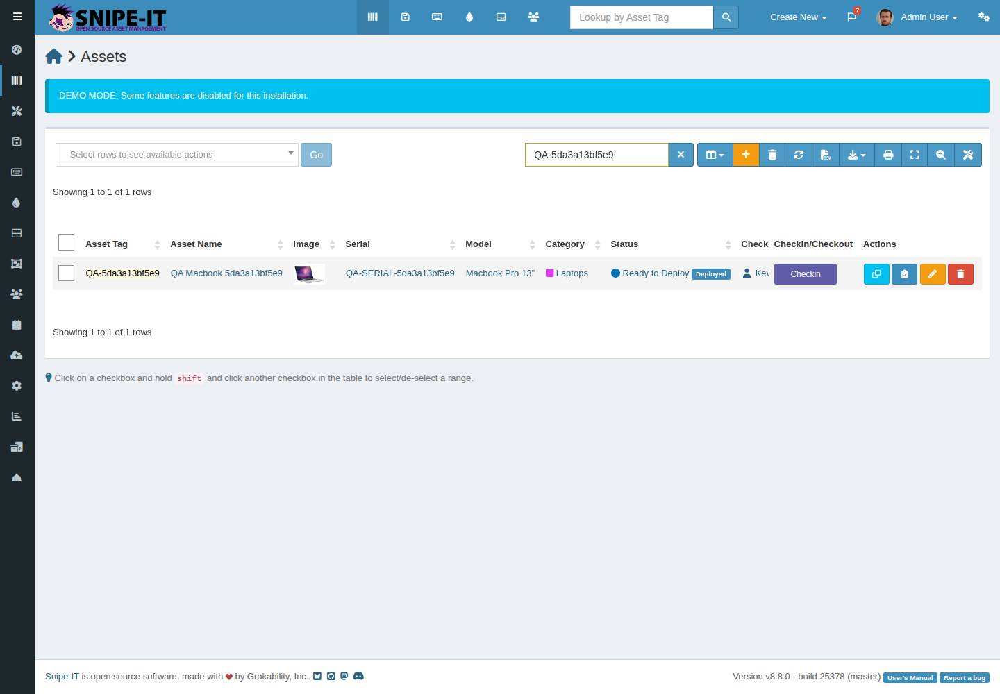
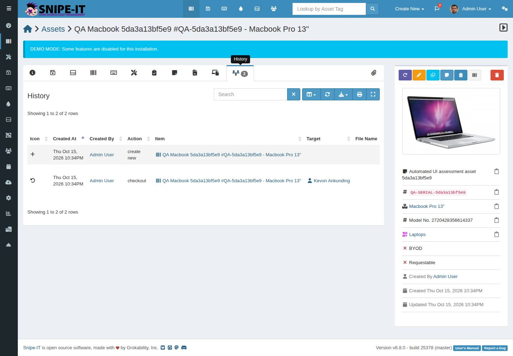

What this is
A .NET 10 + Playwright + NUnit test suite that drives the public Snipe-IT demo through a full asset lifecycle. Every business action happens in the UI. CI runs it in Chromium, Firefox and WebKit, publishes an Allure report and keeps traces, screenshots and videos for every run.
Latest E2E run
Loading the latest run...
| Browser | Passed | Failed | Total | Report |
|---|
Layered design
Pages, components (Select2, data table), fixtures, config and data builders.
Three engines
Chromium, Firefox and WebKit in a CI matrix, plus the test inside Docker.
Self-contained data
Each run creates its own uniquely tagged asset, so runs never depend on shared demo data.
Diagnostics
Playwright trace, video, screenshots and page HTML, attached to the NUnit and Allure results.
Accessibility smoke
axe-core scans of the four visited pages, gated on new critical rules against a recorded baseline.
API cross-check
A read-only REST lookup, using the signed-in session, confirms what the UI shows.
What the test covers
- Sign in to the demo with its published admin account.
- Create a Macbook Pro 13" asset with a unique tag, status Ready to Deploy, checked out to a randomly selected user.
- Search the assets list by the unique tag and check the row: tag, name, serial, model, status and assigned user.
- Open the asset page from that row and check tag, name, serial, model, notes, status and the assigned user.
- Open the History tab and require exactly one
create newand onecheckoutentry, with actor, date, quantity, target and note checked by column. - Cross-check the asset through
GET /api/v1/hardware(read-only) and compare accessibility results with the baseline.
Architecture
Screenshots from a passing CI run


How to run it
Locally (.NET 10 SDK and PowerShell 7)
dotnet restore --locked-mode
dotnet build --no-restore
pwsh tests/SnipeIt.UiTests/bin/Debug/net10.0/playwright.ps1 install --with-deps chromium
dotnet test --no-build --filter TestCategory=E2EUse another engine with BROWSER=firefox or BROWSER=webkit (install it first), and watch it with HEADED=1.
Docker
docker build -t snipeit-uitests .
docker run --init --ipc=host --rm snipeit-uitestsCI
GitHub Actions runs build and format checks, unit tests, the E2E matrix, the Docker run, gitleaks and CodeQL on every pull request. The E2E workflow also runs nightly and on demand, and publishes this page with the latest report from main.